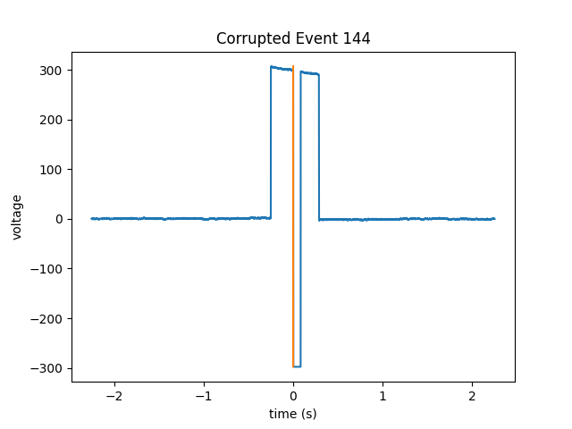

Note
Click here to download the full example code
Manually Recover Events Not Found by the Algorithm¶
In this example, we use pd-parser to find photodiode events that
have corrupted pre-event baselines, photodiode plateaus or post-event
baselines but not corrupted onsets or offsets.
Note that it might be a good idea not to recover these events
as there might be noise in the data around this time.
# Authors: Alex Rockhill <aprockhill@mailbox.org>
#
# License: BSD (3-clause)
Simulate data and use it to make a raw object:
We’ll make an mne.io.Raw object so that we can save out some random data with a photodiode event channel in it in fif format (a commonly used electrophysiology data format).
import os.path as op
import numpy as np
import mock
import mne
from mne.utils import _TempDir
import pd_parser
from pd_parser.parse_pd import _load_data
import matplotlib.pyplot as plt
out_dir = _TempDir()
# simulate photodiode data
np.random.seed(29)
n_events = 300
# let's make our photodiode events on random uniform from 0.25 to 0.75 seconds
n_secs_on = np.random.random(n_events) * 0.5 + 0.25
raw, beh, events, _ = \
pd_parser.simulate_pd_data(n_events=n_events, n_secs_on=n_secs_on,
prop_corrupted=0.0)
sfreq = np.round(raw.info['sfreq']).astype(int)
# corrupt some events
corrupted_indices = [8, 144, 234]
amount = raw._data.max()
fig, axes = plt.subplots(1, len(corrupted_indices), figsize=(8, 4))
fig.suptitle('Corrupted Events')
axes[0].set_ylabel('voltage')
for j, i in enumerate(events[corrupted_indices, 0]):
if j == 0:
raw._data[0, i - sfreq // 5: i - sfreq // 10] = -amount
elif j == 1:
raw._data[0, i + sfreq // 4: i + sfreq // 3] = -amount
else:
raw._data[0, i + 3 * sfreq // 4: i + 5 * sfreq // 6] = amount
axes[j].plot(np.linspace(-1, 2, 3 * sfreq),
raw._data[0, i - sfreq: i + sfreq * 2])
axes[j].set_xlabel('time (s)')
# make figure nicer
fig.tight_layout()
# make fake electrophysiology data
info = mne.create_info(['ch1', 'ch2', 'ch3'], raw.info['sfreq'],
['seeg'] * 3)
raw2 = mne.io.RawArray(np.random.random((3, raw.times.size)) * 1e-6, info)
raw2.info['lowpass'] = raw.info['lowpass'] # these must match to combine
raw.add_channels([raw2])
# bids needs these data fields
raw.info['dig'] = None
raw.info['line_freq'] = 60
# add some offsets to the behavior so it's a bit more realistic
offsets = np.random.randn(n_events) * 0.001
beh['time'] = np.array(beh['time']) + offsets
# save to disk as required by ``pd-parser``, raw needs to have a filename
fname = op.join(out_dir, 'sub-1_task-mytask_raw.fif')
raw.save(fname)
Out:
Creating RawArray with float64 data, n_channels=1, n_times=2035104
Range : 0 ... 2035103 = 0.000 ... 2035.103 secs
Ready.
Creating RawArray with float64 data, n_channels=3, n_times=2035104
Range : 0 ... 2035103 = 0.000 ... 2035.103 secs
Ready.
Writing /var/folders/s4/y1vlkn8d70jfw7s8s03m9p540000gn/T/tmp_mne_tempdir_de9nwvs_/sub-1_task-mytask_raw.fif
Closing /var/folders/s4/y1vlkn8d70jfw7s8s03m9p540000gn/T/tmp_mne_tempdir_de9nwvs_/sub-1_task-mytask_raw.fif
[done]
Find the photodiode events relative to the behavioral timing of interest:
This function will use the default parameters to find and align the photodiode events, recovering the events that we just corrupted.
Note that the mock function mocks user input so when you run the example, you want to delete that line and unindent the next line, and then provide your own input depending on whether you want to keep the events or not.
with mock.patch('builtins.input', return_value='y'):
pd_parser.parse_pd(fname, pd_event_name='Stim On', beh=beh,
pd_ch_names=['pd'], beh_key='time', recover=True)


Out:
Reading in /var/folders/s4/y1vlkn8d70jfw7s8s03m9p540000gn/T/tmp_mne_tempdir_de9nwvs_/sub-1_task-mytask_raw.fif
Opening raw data file /var/folders/s4/y1vlkn8d70jfw7s8s03m9p540000gn/T/tmp_mne_tempdir_de9nwvs_/sub-1_task-mytask_raw.fif...
Isotrak not found
Range : 0 ... 2035103 = 0.000 ... 2035.103 secs
Ready.
Reading 0 ... 2035103 = 0.000 ... 2035.103 secs...
Finding photodiode events
0%| | 0/16269 [00:00<?, ?it/s]
1%|1 | 195/16269 [00:00<00:12, 1308.17it/s]
2%|1 | 252/16269 [00:00<00:17, 939.51it/s]
2%|2 | 348/16269 [00:00<00:16, 944.93it/s]
3%|2 | 437/16269 [00:00<00:17, 927.32it/s]
3%|3 | 506/16269 [00:00<00:40, 392.53it/s]
4%|3 | 633/16269 [00:00<00:31, 495.05it/s]
5%|4 | 803/16269 [00:01<00:24, 628.37it/s]
6%|5 | 959/16269 [00:01<00:20, 760.26it/s]
7%|6 | 1095/16269 [00:01<00:17, 876.17it/s]
8%|7 | 1232/16269 [00:01<00:15, 977.36it/s]
8%|8 | 1359/16269 [00:01<00:15, 956.21it/s]
9%|9 | 1480/16269 [00:01<00:14, 1019.82it/s]
10%|9 | 1598/16269 [00:01<00:23, 628.15it/s]
10%|# | 1690/16269 [00:02<00:21, 663.30it/s]
11%|#1 | 1790/16269 [00:02<00:20, 712.42it/s]
12%|#1 | 1877/16269 [00:02<00:20, 686.15it/s]
12%|#2 | 1972/16269 [00:02<00:19, 748.01it/s]
13%|#2 | 2059/16269 [00:02<00:24, 585.50it/s]
13%|#3 | 2142/16269 [00:02<00:22, 634.30it/s]
14%|#3 | 2235/16269 [00:02<00:20, 699.19it/s]
14%|#4 | 2349/16269 [00:02<00:17, 790.72it/s]
15%|#5 | 2500/16269 [00:03<00:14, 922.18it/s]
16%|#6 | 2624/16269 [00:03<00:13, 998.67it/s]
19%|#8 | 3017/16269 [00:03<00:10, 1286.51it/s]
21%|## | 3395/16269 [00:03<00:08, 1603.83it/s]
23%|##3 | 3764/16269 [00:03<00:06, 1930.65it/s]
26%|##5 | 4177/16269 [00:03<00:05, 2297.44it/s]
28%|##8 | 4576/16269 [00:03<00:04, 2631.37it/s]
31%|### | 4966/16269 [00:03<00:03, 2914.54it/s]
33%|###2 | 5364/16269 [00:03<00:03, 3167.88it/s]
35%|###5 | 5764/16269 [00:03<00:03, 3376.61it/s]
38%|###7 | 6174/16269 [00:04<00:02, 3564.50it/s]
40%|#### | 6566/16269 [00:04<00:02, 3663.05it/s]
43%|####2 | 6956/16269 [00:04<00:02, 3689.23it/s]
45%|####5 | 7361/16269 [00:04<00:02, 3787.27it/s]
48%|####7 | 7777/16269 [00:04<00:02, 3889.25it/s]
50%|##### | 8175/16269 [00:04<00:02, 3300.76it/s]
52%|#####2 | 8527/16269 [00:04<00:02, 3263.58it/s]
55%|#####4 | 8938/16269 [00:04<00:02, 3475.52it/s]
57%|#####7 | 9301/16269 [00:04<00:02, 3457.96it/s]
59%|#####9 | 9657/16269 [00:05<00:01, 3351.07it/s]
62%|######1 | 10036/16269 [00:05<00:01, 3469.69it/s]
64%|######3 | 10390/16269 [00:05<00:01, 3226.85it/s]
66%|######5 | 10721/16269 [00:05<00:01, 3171.38it/s]
68%|######7 | 11044/16269 [00:05<00:01, 3055.13it/s]
70%|######9 | 11355/16269 [00:05<00:01, 2914.14it/s]
72%|#######1 | 11653/16269 [00:05<00:01, 2932.68it/s]
73%|#######3 | 11950/16269 [00:05<00:01, 2922.49it/s]
76%|#######5 | 12295/16269 [00:05<00:01, 3062.97it/s]
78%|#######7 | 12659/16269 [00:06<00:01, 3214.20it/s]
80%|######## | 13024/16269 [00:06<00:00, 3333.50it/s]
82%|########2 | 13380/16269 [00:06<00:00, 3397.66it/s]
84%|########4 | 13735/16269 [00:06<00:00, 3441.52it/s]
87%|########6 | 14095/16269 [00:06<00:00, 3485.80it/s]
89%|########8 | 14446/16269 [00:06<00:00, 3221.75it/s]
91%|#########1| 14826/16269 [00:06<00:00, 3375.55it/s]
93%|#########3| 15170/16269 [00:06<00:00, 3250.19it/s]
95%|#########5| 15500/16269 [00:06<00:00, 3231.71it/s]
98%|#########7| 15900/16269 [00:06<00:00, 3428.39it/s]
100%|##########| 16269/16269 [00:07<00:00, 2295.44it/s]
297 up-deflection photodiode candidate events found
Checking best alignments
0%| | 0/299 [00:00<?, ?it/s]
1%|1 | 4/299 [00:00<00:07, 39.55it/s]
4%|4 | 12/299 [00:00<00:06, 46.09it/s]
7%|7 | 21/299 [00:00<00:05, 53.55it/s]
9%|9 | 28/299 [00:00<00:04, 57.40it/s]
11%|#1 | 34/299 [00:00<00:05, 51.57it/s]
13%|#3 | 40/299 [00:00<00:05, 47.03it/s]
16%|#6 | 49/299 [00:00<00:04, 54.29it/s]
19%|#8 | 56/299 [00:00<00:04, 53.69it/s]
21%|##1 | 63/299 [00:01<00:04, 57.02it/s]
24%|##3 | 71/299 [00:01<00:04, 56.20it/s]
26%|##5 | 77/299 [00:01<00:04, 49.62it/s]
28%|##8 | 84/299 [00:01<00:04, 47.14it/s]
30%|### | 90/299 [00:01<00:04, 46.09it/s]
32%|###2 | 96/299 [00:01<00:04, 45.97it/s]
34%|###4 | 103/299 [00:01<00:03, 50.48it/s]
36%|###6 | 109/299 [00:02<00:03, 51.33it/s]
38%|###8 | 115/299 [00:02<00:03, 46.85it/s]
41%|#### | 122/299 [00:02<00:03, 51.70it/s]
43%|####3 | 129/299 [00:02<00:03, 53.75it/s]
46%|####5 | 137/299 [00:02<00:02, 58.95it/s]
48%|####8 | 145/299 [00:02<00:02, 63.28it/s]
52%|#####1 | 154/299 [00:02<00:02, 66.86it/s]
54%|#####3 | 161/299 [00:02<00:02, 64.83it/s]
56%|#####6 | 168/299 [00:03<00:02, 54.15it/s]
59%|#####8 | 176/299 [00:03<00:02, 59.75it/s]
61%|######1 | 183/299 [00:03<00:02, 55.77it/s]
63%|######3 | 189/299 [00:03<00:02, 54.86it/s]
65%|######5 | 195/299 [00:03<00:01, 54.33it/s]
68%|######7 | 203/299 [00:03<00:01, 56.75it/s]
72%|#######1 | 215/299 [00:03<00:01, 65.78it/s]
75%|#######4 | 223/299 [00:03<00:01, 57.31it/s]
77%|#######6 | 230/299 [00:04<00:01, 54.46it/s]
80%|#######9 | 238/299 [00:04<00:01, 59.22it/s]
84%|########3 | 251/299 [00:04<00:00, 70.74it/s]
88%|########8 | 264/299 [00:04<00:00, 77.23it/s]
91%|#########1| 273/299 [00:04<00:00, 74.95it/s]
94%|#########4| 282/299 [00:04<00:00, 65.29it/s]
97%|#########6| 290/299 [00:04<00:00, 66.42it/s]
100%|#########9| 298/299 [00:04<00:00, 69.04it/s]
100%|##########| 299/299 [00:04<00:00, 60.74it/s]
Best alignment with the events shifted 12 ms relative to the first behavior event
errors: min -3, q1 -1, med 0, q3 1, max 75
Excluding events that have zero close events or more than one photodiode event within `max_len` time
Event 8 recovered (not excluded)
Event 144 recovered (not excluded)
Event 234 recovered (not excluded)
Find cessations of the photodiode deflections
Since we manually intervened for the onsets, on those same trials, we’ll have to manually intervene for the offsets.
On the documentation webpage, this is example is not interactive, but if you download it as a jupyter notebook and run it or copy the code into a console running python (ipython recommended), you can see how to interact with the photodiode data to pick reasonable parameters by following the instructions.
pd_parser.add_pd_off_events(fname, off_event_name='Stim Off')


- 
Out:
Reading in /var/folders/s4/y1vlkn8d70jfw7s8s03m9p540000gn/T/tmp_mne_tempdir_de9nwvs_/sub-1_task-mytask_raw.fif
Opening raw data file /var/folders/s4/y1vlkn8d70jfw7s8s03m9p540000gn/T/tmp_mne_tempdir_de9nwvs_/sub-1_task-mytask_raw.fif...
Isotrak not found
Range : 0 ... 2035103 = 0.000 ... 2035.103 secs
Ready.
Reading 0 ... 2035103 = 0.000 ... 2035.103 secs...
0%| | 0/16269 [00:00<?, ?it/s]
2%|1 | 307/16269 [00:00<00:05, 3062.11it/s]
5%|4 | 756/16269 [00:00<00:04, 3383.39it/s]
6%|5 | 975/16269 [00:00<00:05, 2900.93it/s]
8%|8 | 1327/16269 [00:00<00:04, 3054.18it/s]
10%|# | 1634/16269 [00:00<00:04, 3057.32it/s]
12%|#1 | 1900/16269 [00:00<00:05, 2722.11it/s]
14%|#4 | 2311/16269 [00:00<00:04, 3027.41it/s]
16%|#6 | 2673/16269 [00:00<00:04, 3183.26it/s]
19%|#8 | 3033/16269 [00:00<00:04, 3296.18it/s]
21%|## | 3413/16269 [00:01<00:03, 3432.29it/s]
23%|##3 | 3758/16269 [00:01<00:03, 3418.20it/s]
26%|##5 | 4215/16269 [00:01<00:03, 3697.33it/s]
29%|##9 | 4740/16269 [00:01<00:02, 4057.14it/s]
32%|###1 | 5162/16269 [00:01<00:02, 3912.52it/s]
35%|###4 | 5661/16269 [00:01<00:02, 4182.27it/s]
38%|###7 | 6171/16269 [00:01<00:02, 4420.30it/s]
41%|####1 | 6680/16269 [00:01<00:02, 4601.02it/s]
44%|####4 | 7182/16269 [00:01<00:01, 4718.29it/s]
47%|####7 | 7715/16269 [00:01<00:01, 4886.12it/s]
50%|##### | 8212/16269 [00:02<00:01, 4834.88it/s]
53%|#####3 | 8701/16269 [00:02<00:01, 4488.88it/s]
56%|#####6 | 9159/16269 [00:02<00:01, 4051.54it/s]
59%|#####8 | 9579/16269 [00:02<00:01, 3634.93it/s]
61%|######1 | 9961/16269 [00:02<00:01, 3493.90it/s]
63%|######3 | 10325/16269 [00:02<00:01, 3354.56it/s]
66%|######5 | 10672/16269 [00:02<00:01, 3231.41it/s]
68%|######8 | 11084/16269 [00:02<00:01, 3453.96it/s]
71%|####### | 11499/16269 [00:03<00:01, 3636.67it/s]
74%|#######3 | 11973/16269 [00:03<00:01, 3908.05it/s]
77%|#######6 | 12447/16269 [00:03<00:00, 4123.81it/s]
79%|#######9 | 12924/16269 [00:03<00:00, 4293.92it/s]
82%|########2 | 13364/16269 [00:03<00:00, 4077.49it/s]
85%|########5 | 13833/16269 [00:03<00:00, 4242.77it/s]
88%|########7 | 14266/16269 [00:03<00:00, 4261.11it/s]
91%|######### | 14747/16269 [00:03<00:00, 4410.52it/s]
94%|#########3| 15227/16269 [00:03<00:00, 4514.88it/s]
96%|#########6| 15683/16269 [00:03<00:00, 4404.48it/s]
100%|#########9| 16208/16269 [00:04<00:00, 4627.82it/s]
100%|##########| 16269/16269 [00:04<00:00, 4010.28it/s]
Overwriting existing file.
<Annotations | 597 segments: Stim Off (297), Stim On (300)>
Check the results:
Finally, we’ll check that the recovered events and the original events match.
annot = _load_data(fname)[0]
raw.set_annotations(annot)
events2, event_id = mne.events_from_annotations(raw)
on_events = events2[events2[:, 2] == event_id['Stim On']]
print(f'Original: {events[corrupted_indices, 0]}\n'
f'Recovered: {on_events[corrupted_indices, 0]}')
'''
# uncomment when using interactively, this section doesn't work
# for the non-interactive documentation
off_events = events2[events2[:, 2] == event_id['Stim Off']]
original_off = events[corrupted_indices, 0] + \
np.round(n_secs_on[corrupted_indices] * raw.info['sfreq']).astype(int)
print(f'Original off: {original_off}\n'
f'Recovered off: {on_events[corrupted_indices, 0]}')
'''
Out:
Reading in /var/folders/s4/y1vlkn8d70jfw7s8s03m9p540000gn/T/tmp_mne_tempdir_de9nwvs_/sub-1_task-mytask_raw.fif
Opening raw data file /var/folders/s4/y1vlkn8d70jfw7s8s03m9p540000gn/T/tmp_mne_tempdir_de9nwvs_/sub-1_task-mytask_raw.fif...
Isotrak not found
Range : 0 ... 2035103 = 0.000 ... 2035.103 secs
Ready.
Used Annotations descriptions: ['Stim Off', 'Stim On']
Original: [ 65602 989660 1595483]
Recovered: [ 65602 989660 1595483]
"\n# uncomment when using interactively, this section doesn't work\n# for the non-interactive documentation\noff_events = events2[events2[:, 2] == event_id['Stim Off']]\noriginal_off = events[corrupted_indices, 0] + np.round(n_secs_on[corrupted_indices] * raw.info['sfreq']).astype(int)\nprint(f'Original off: {original_off}\n'\n f'Recovered off: {on_events[corrupted_indices, 0]}')\n"
Total running time of the script: ( 0 minutes 30.425 seconds)